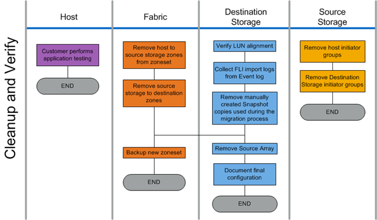

Migration SAN avec FLI
Migration SAN avec FLI
Vérifier le workflow de phase
 Suggérer des modifications
Suggérer des modifications
La phase de vérification du processus de migration porte sur le nettoyage post-migration et la confirmation de l'exécution du plan de migration. Les enregistrements d'initiateur sur le stockage source et la zone entre la zone source et la zone de destination sont supprimés.
La figure suivante illustre le workflow de phase de vérification.

Les tâches de phase de vérification sont répertoriées dans le tableau suivant.
| Composant | Tâches |
|---|---|
Hôte |
Le client effectue les tests d'applications. |
Structure |
|
Système de stockage de destination |
|
Le stockage source |
|